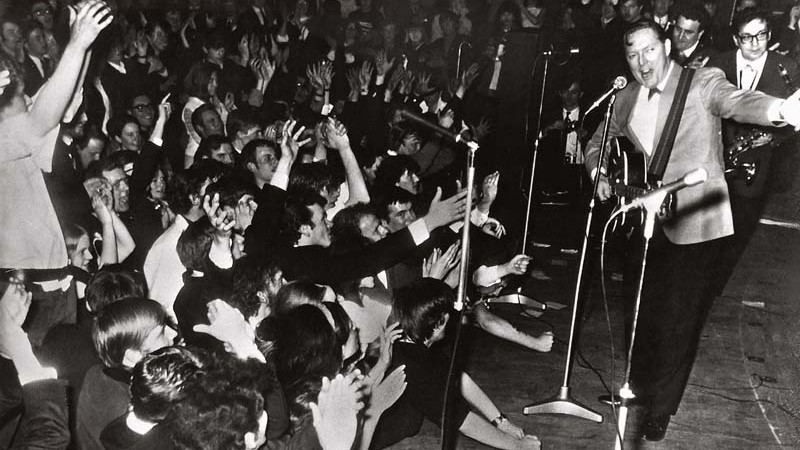
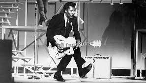

Surgimento do Rock
O Rock é uma vertente musical surgida do termo Rock and Roll. Originou-se nos Estados Unidos na segunda metade do século XX, alcançando seu auge nos anos 70 e 80. O gênero é fruto de uma combinação de diversos tipos de música, principalmente a música negra, que com o passar do tempo, desdobrou-se também em outros subgêneros. Hoje em dia ganhou o mundo e mobiliza grande número de pessoas que apreciam a vertente, tendo até uma data em sua homenagem, o Dia Mundial do Rock, em 13 de julho.

O surgimento do rock aconteceu nos EUA como consequência da mistura de outros estilos musicais, com enfoque no jazz, folk, country e rhythm and blues. As primeiras experimentações ocorreram ainda na década de 40, sobretudo em seus últimos anos, mas foi nos anos 50 que a vertente ganhou contornos mais nítidos. Os nomes que se destacaram nessa primeira fase foram: Jackie Brenston, Jerry Lee Lewis, Johnny Cash, Jimmy Preston, Little Richard, Bill Haley, Chuck Berry (esse considerado por muitos como o "pai do rock") e outros.
Rock através das décadas
Ao longos das décadas foram surgindo grandes astros do rock. Nos anos 50 surge uma figura que viria a ser considerada mais tarde como "rei do rock", era Elvis Presley.
Nos anos 60 aparecem novos nomes na cena e o rock ganha ainda mais o coração do público. Têm destaque nesse momento: The Doors, Jimi Hendrix, Janis Joplin, Pink Floyd, além das bandas The Beatles e Rolling Stones
Os anos 70 foram marcados pelo aparecimento de bandas como Queen, Led Zeppelin, Kiss, Black Sabbath, Ramones, The Clash, Sex Pistols, David Bowie, The Runaways (banda exclusivamente feminina).
Nos anos 80 o comportamento e estética visual que imperavam eram bastante excêntricos, trazendo muito brilho, penteados e roupas exageradas. No meio musical não foi diferente, as bandas apresentavam essa ousadia e as que têm destaque são: Bon Jovi, Van Halen, New Order, The Cure, Pretenders, Roxette, e muitas outras.
Já na década de 90, o estilo de rock que despontou foi o grunge, um rock alternativo vindo de Seattle. A banda de maior sucesso na época foi Nirvana, mas tiveram outros nomes importantes como Pearl Jam, R.E.M, Alice in Chains, Soundgarden, Red Hot Chili Peppers
Nos anos 2000 o rock perdeu um pouco de força por conta da crescente onda pop. Ainda assim, tiveram espaço bandas como Evanescence, The Strokes, Interpol, Arctic Monkeys, Franz Ferdinand, e outras.